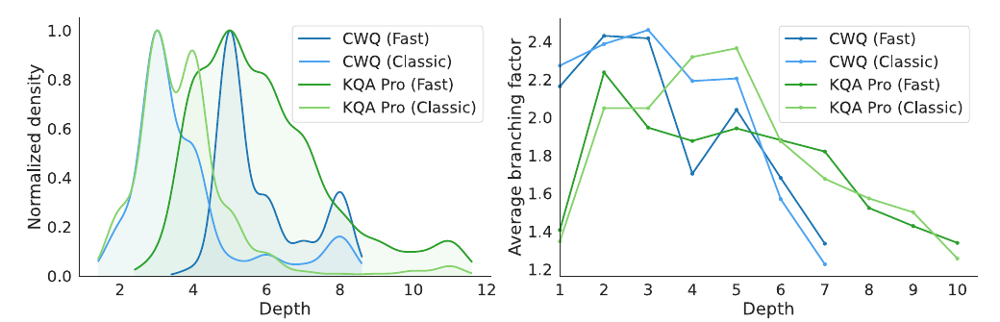

目录 · 11 节
1它到底在解决什么问题？2先看全景：经典 MCTS 和 Fast MCTS3IG 奖励：查到的东西能不能让问题变得好猜4为什么要先清洗记录？5为什么还需要深度衰减？6实验：搜索带来多少，IG 又带来多少7省了多少成本？8IG 分数真的能挑对分支吗？9我认为它的局限10一个搜索或问答团队可以怎么试11结论用蒙特卡洛树搜索（MCTS）帮大模型在知识库上一步步查答案时，中间步骤可以不训练奖励模型、也不模拟到底，就打出有用的分。办法是把截至这一步的查询记录交给一个开源指令模型，分别算带上原问题和不带原问题时这段记录的困惑度。带上问题后困惑度降得越多，说明查到的东西和问题越相关，这一步的奖励就越高。以往要么每一步都模拟到底、再给最终状态打分，代价很高；要么另训一个奖励模型，需要大量数据。新办法每个新节点只要两次前向计算。在 4 个知识库问答（KBQA）基准上，它稳定好于只走一条路径、不做搜索的方法；和模拟到底的经典树搜索比，准确率和成本的权衡一般更好。
做 agent 检索、多步工具调用的人值得读这篇，因为它给出了一个不用额外训练的中间步骤打分办法：不需要标注过程，也不需要训练奖励模型，代价是每个新节点多两次前向计算。核心思想一句话：打分只看“查到的东西能不能让原问题变得好猜”。提出下一步查询的是一个经过 SFT 的小模型，打分的是另一个未经微调的开源指令模型。在复杂问题基准 CWQ（ComplexWebQuestions）上，F1 从只走一条路径时的 37.47 提到 70.15，比模拟到底的经典树搜索的 63.44 还高，生成调用次数却只有经典树搜索的一半。
它到底在解决什么问题？
这里的知识库是 Freebase、Wikidata 这类结构化库，回答的最终产物是一条能执行的查询，写成知识库的查询格式 SPARQL。论文沿用 Interactive-KBQA 的做法：大模型像 agent 一样，每一步先写一段思考，再调用一个工具，拿回知识库的返回结果。工具有四个：找实体（SearchNodes）、查这个实体连着哪些关系（SearchGraphPatterns）、执行一条 SPARQL（ExecuteSPARQL）、结束（Done）。GrailQA 上另加一个查类型的 SearchTypes。
拿论文图 1 里的问题做例子：“Shawnee Smith 演过的电视节目里，tvrage_id 最大的是哪个？”第一步找到演员这个实体以后，下一步可能有好几种走法：
| 候选下一步（示意） | 知识库返回 | 离答案近不近 |
|---|---|---|
| 查她的“电视出演”关系 | 出演过的剧集列表，如 30 Days of Night: Dust to Dust | 近，问题问的就是电视节目 |
| 查她的“电影作品”关系 | 电影列表 | 远，方向错了 |
| 查她的出生地 | 一个城市 | 无关 |
只走一条路径的 agent 选错一次就回不来。树搜索可以同时保留几条分支，但必须回答：在还没写出最终 SPARQL 的时候，哪条分支更有希望？这就是中间步骤的打分问题。
先看全景：经典 MCTS 和 Fast MCTS

树上每个节点存一步的思考、工具调用和返回结果，从根到这个节点的路径就是这条分支的完整历史。每一轮搜索做四件事：
- 选择：从根往下，按树搜索常用的选择算法 UCT 挑一个节点。
- 扩展：让 agent 从这个节点采样 5 个候选下一步，逐个调用工具，得到 5 个子节点。
- 打分：给每个新子节点一个奖励。
- 回传：把奖励沿路径加回所有祖先节点。
两种 MCTS 只在第 3 步不同。经典 MCTS 对每个没结束的新子节点做一次模拟：让 agent 沿一条路一直生成到 Done 或最大深度，只给这个终点打分。论文实验里终点同样用下面要讲的 IG（信息增益）奖励打分，不看标准答案，所以两者只差在要不要模拟到底。一次模拟要连续调用好几次生成。Fast MCTS 不做模拟，直接用 IG 奖励给子节点打分，只要两次前向计算。
每道题最多跑 12 轮选择；凑够 5 条能执行且结果非空的终点分支时，搜索会提前停止。最终答案由这些分支的执行结果投票决定。
IG 奖励：查到的东西能不能让问题变得好猜
论文把这个分数叫 IG 奖励。直觉是：如果一条分支查到的东西和问题密切相关，那么看完这段查询记录以后，原问题就变得“好猜”了。
具体做法是用一个冻结的开源指令模型（默认是原版 Llama-3.1-8B-Instruct，没有任何微调）算两次困惑度。
- 第一次：查询记录后面接一句固定提示“根据这段交互记录，原问题是：”，算这段文字的困惑度。
- 第二次：同样的记录和提示，后面再接上原问题，算整段的困惑度。
如果记录里有“电视出演”“剧集列表”这类内容，后面接的问题“演过的电视节目里……”就很顺，整段困惑度会下降。奖励是
其中 是清洗后的查询记录， 是原问题， 是 sigmoid，、 控制分数范围。困惑度比值大于 1，说明接上问题后整段更顺，奖励就高于 1。
严格说，第二次算的是整段文字的平均困惑度，记录本身的长短和顺不顺也会影响它。所以这个比值不是精确的“有没有记录时，问题的概率差多少”，名字叫信息增益，但它只是受互信息启发的近似分数，不是互信息的估计。论文也只把它当作一个近似分数，用来给同一个父节点下的兄弟分支排先后。兄弟分支面对的是同一个问题，问题本身好不好猜对它们是一样的，比的主要是各自查到的东西。
算一个小例子（示意）：两个兄弟分支第一次算出的困惑度都是 20。分支 A 查到了电视出演，接上问题后整段困惑度降到 16，比值 1.25，奖励约 1.81。分支 B 查到电影作品，接上问题后反而升到 21，比值约 0.95，奖励约 0.76。UCT 会更常回到分支 A。
推理时打分只用到问题和查询记录，不需要标准答案。标准答案只在离线时使用：评测时算 F1，以及后面那项事后的排序分析，搜索过程中从不使用。
为什么要先清洗记录？
如果直接把原始记录拿去算，agent 的思考文字里常常会复述问题，找实体时的参数也会直接抄问题里的名字。这样不管查到了什么，接上问题后困惑度往往都会下降，分数反映的是字面重复。
所以算分前，论文先把记录清洗一遍，保留这几样：
- 删掉所有思考文字。
- 找实体那一步只保留工具名，删掉抄自问题的实体名。
- 后面几步的结构化参数保留，比如完整的 SPARQL 查询。论文的理由是它们建立在知识库返回的结果之上。
- 返回结果只保留当前这一步的，因为打分评的就是这一步带来的新证据。
论文图 1 右边的“History for Fast MCTS”就是清洗后的样子：一个只剩工具名的 SearchNodes，一条完整保留的 SearchGraphPatterns 查询，以及它返回的关系列表。
为什么还需要深度衰减？
分支越深，越可能又长又没收获。回传时，论文给每个节点的奖励乘一个随深度变小的系数：预期深度设为 7，超过 7 以后每深一层系数减 0.1，最低到 0。比如深度 9 的节点，奖励只按 0.8 倍加回去。这样很深却没结果的分支会逐渐少被选中，同时奖励不会变成负数。
实验：搜索带来多少，IG 又带来多少
agent 是用少量标注轨迹 SFT 过的 Llama-3.1-8B-Instruct：WebQSP 和 CWQ 合用 300 条，GrailQA 150 条（由闭源大模型生成、人工逐条核验），Wikidata 上的复杂问答基准 KQA Pro 用 450 条。CWQ、GrailQA、KQA Pro 的测试集各随机抽 500、500、900 题，所有方法用同一批题。
| 方法 | WebQSP F1 | CWQ F1 | GrailQA F1 | KQA Pro 准确率 |
|---|---|---|---|---|
| GPT-4.1 提示（单路径） | 70.02 | 46.15 | 63.92 | 70.78 |
| SFT agent（单路径） | 56.83 | 37.47 | 55.65 | 75.78 |
| SFT agent 跑 5 次投票 | 65.81 | 55.97 | 64.86 | 83.44 |
| 经典 MCTS | 69.14 | 63.44 | 79.91 | 86.67 |
| Fast MCTS | 73.87 | 70.15 | 80.52 | 86.44 |
| Fast MCTS，奖励换成常数 | 66.21 | 57.99 | 70.84 | 75.56 |
这张表说明三件事。第一，树搜索本身有用：同一个 8B agent，经典 MCTS 在四个基准上都高于跑 5 次投票。第二，IG 分数是关键：保留 Fast MCTS 的搜索流程、只把奖励换成常数，CWQ 从 70.15 掉到 57.99，和简单投票差不多。只保留搜索流程、去掉有信息量的打分，效果就撑不起来。第三，在 KQA Pro 上 Fast MCTS 和经典 MCTS 基本持平。
论文还试了用同一个 IG 分数做逐层 beam search，每层只留分数最高的几条。它在四个基准上都低于 Fast MCTS，CWQ 上是 60.82。beam search 每层砍掉的分支就再也回不来了，而 UCT 会让暂时分数不高的分支保留被重新访问的机会。
最接近的前作是 KBQA-o1，它需要用终点结果训练一个奖励模型。在 WebQSP 全量测试集、同样 100 条标注的设置下，用 Llama-3.1-8B 时 Fast MCTS 是 66.11，KBQA-o1 是 59.8（KBQA-o1 的数字取自它的原论文）；换成 Qwen2.5-7B 和 Gemma-2-9B 也都更高。
省了多少成本？
| CWQ | F1 | 生成调用次数 | 每题耗时（秒） |
|---|---|---|---|
| 跑 5 次投票 | 55.97 | 32.44 | 140.67 |
| 经典 MCTS | 63.44 | 55.15 | 243.43 |
| Fast MCTS | 70.15 | 27.49 | 203.84 |
Fast MCTS 的生成调用次数只有经典 MCTS 的一半，耗时少约 16%。耗时没有按调用次数同比下降，这里的耗时包含打分的前向计算和工具执行。它比跑 5 次投票慢约 45%，论文给的原因是每次扩展都要做打分的前向计算，而且搜索探索的状态更多。这是拿时间换了 14 个点的 F1。
IG 分数真的能挑对分支吗？
论文先跑经典 MCTS，执行每个终点的 SPARQL，用标准答案算 F1。再把这些终点 F1 沿树往上回传，得到每个节点的蒙特卡洛价值估计，下文叫“真实价值”。这一步只用于事后分析，不在推理里。然后看在同一个父节点下的兄弟分支里，IG 排出的顺序能不能把真实价值最高的那个保住。
在 CWQ 上，IG 排第一的恰好是最好分支的比例是 75.73%，用思维链提示让模型打分只有 62.14%；只要保留 IG 的前 3 名，最好分支在两个数据集上都 100% 被留住。但 IG 排出的完整顺序时好时坏。衡量整体排序一致性的 Kendall τ，在 CWQ 上 IG 是 0.37、思维链打分是 0.12；在 KQA Pro 上 IG 只有 0.11，反而低于思维链打分的 0.19。这说明 IG 适合用来“别把好分支砍掉”，不适合用来精确估计一条分支值多少分。

这也解释了为什么在 KQA Pro 上 Fast MCTS 没能超过经典 MCTS。CWQ 的难点主要是在一堆字面相近的 Freebase 关系里挑对的那个，选错的分支一看返回结果就露馅，IG 分数降得很快。KQA Pro 的子节点可能是限定条件、比较、计数、布尔判断，种类更杂，链条也更深。眼下这一步查到了什么，不太能预示最后能不能拼出一条正确的查询。
我认为它的局限
第一，它比最简单的做法慢。CWQ 上每题耗时是跑 5 次投票的 1.45 倍，KQA Pro 上是 1.24 倍。对延迟敏感的在线问答，这个代价要算清楚。
第二，打分质量依赖“局部能预示全局”。在 KQA Pro 这种操作类型多、链条长的数据上，Fast MCTS 是 86.44，经典 MCTS 是 86.67，没有优势。
第三，搜索常常找到了好分支，却没选中。CWQ 上前 5 个候选里最好的 F1 是 76.29，最终投票结果是 70.15，差了 6 个点。投票这一步还有改进空间。另外，除 WebQSP 外都是抽样测试集，每个知识库用各自训练的 agent，论文也说不声称跨知识库迁移。
一个搜索或问答团队可以怎么试
- 先找一个多步工具调用的场景，比如 agent 检索或者结构化查询生成，确认现在的 agent 只走一条路径跑到底。拿多次采样投票做基线，看看多试几次有没有收益；没有收益，树搜索也很难有。
- 实现 IG 分数：拿一个现成的开源指令模型，对清洗后的记录算两次困惑度。清洗规则要按自己的工具改，原则是删掉所有可能复述问题的文字。
- 先离线验证排序：在一批有标准答案的题上，看 IG 前 3 名能不能保住最好的分支。保不住，就别往下做。
- 再接 UCT 搜索，控制每次扩展的候选数和总预算，同时记录准确率和每题耗时，和投票基线比性价比。
结论
最值得带走的一点是：中间步骤的奖励不一定要训练，也不一定要模拟到底。让一个现成模型判断“看完这些，原问题好不好猜”，就足以帮树搜索保住有希望的分支。
| 维度 | 评价 |
|---|---|
| 问题重要性 | 中高。多步工具调用里给中间步骤打分是普遍难题，不只在 KBQA |
| 方法创新性 | 中。困惑度比值打分很简单，价值在于去掉了模拟和奖励模型训练 |
| 实验证据 | 中高。四个基准、常数奖励和 beam search 对照、多种子重跑都有，但测试集是抽样的 |
| 工程成本 | 低到中。只需一个冻结模型做前向计算，但比单条推理慢 |
| 是否值得尝试 | 值得，适合局部返回结果能预示最终成败的工具调用场景 |
读完这篇，你觉得
夜读鸮记下了，谢谢你的反馈。
点一下即可，无需登录；再点一次撤回。只统计匿名次数，不记录你是谁。
讨论
欢迎补充实验细节、复现经验或不同看法。需 GitHub 登录。
正在加载讨论…